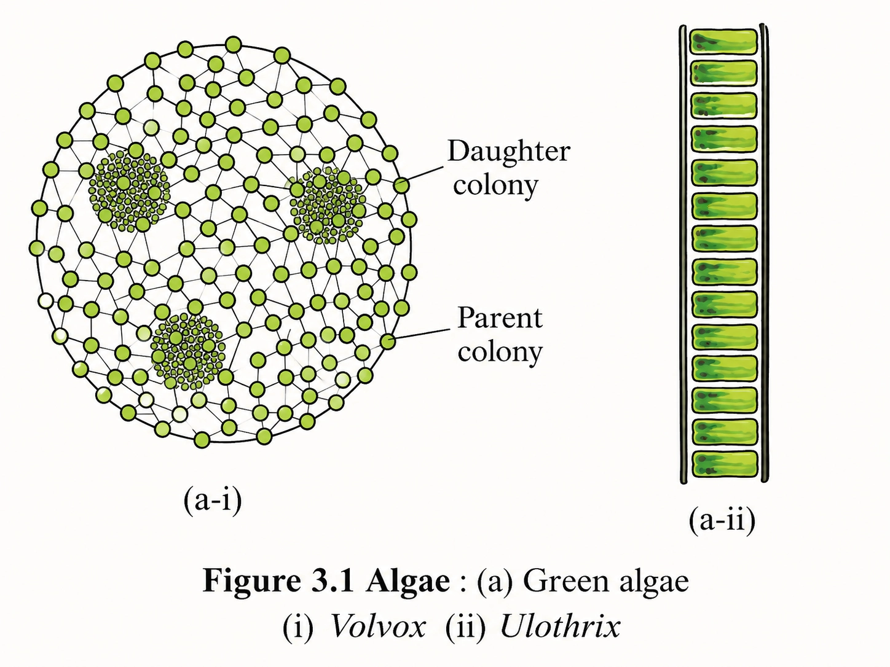
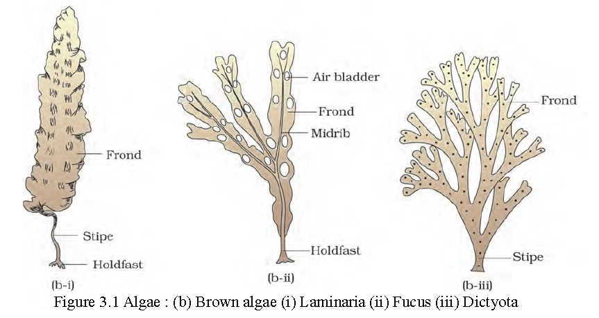
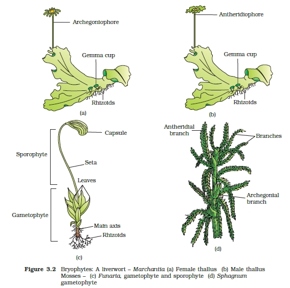
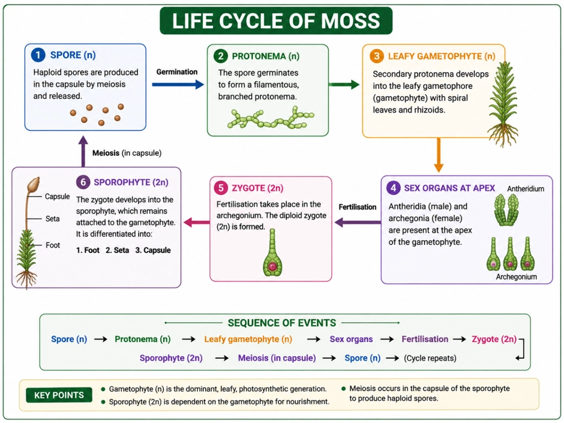
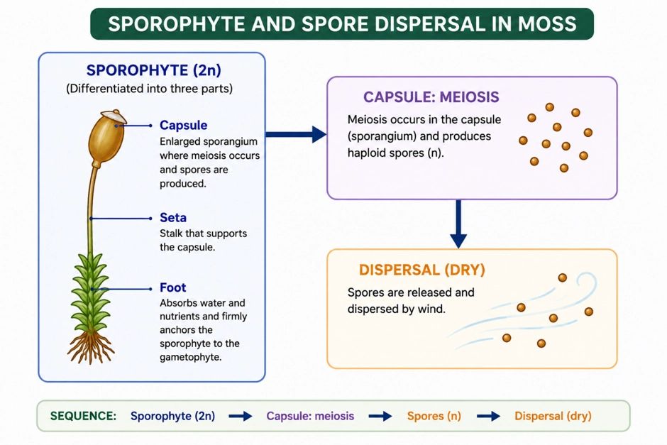
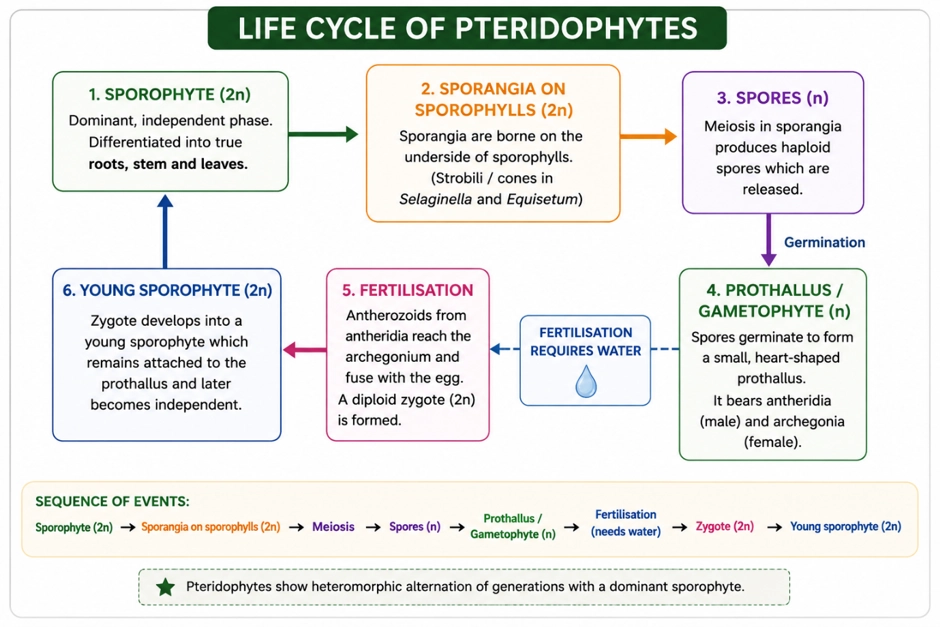
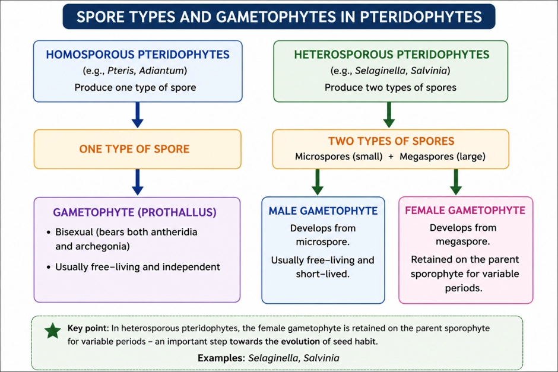
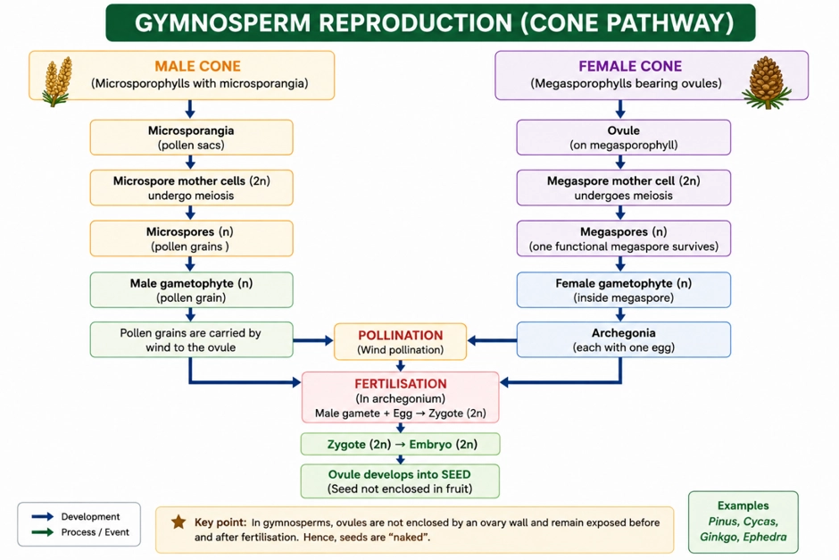
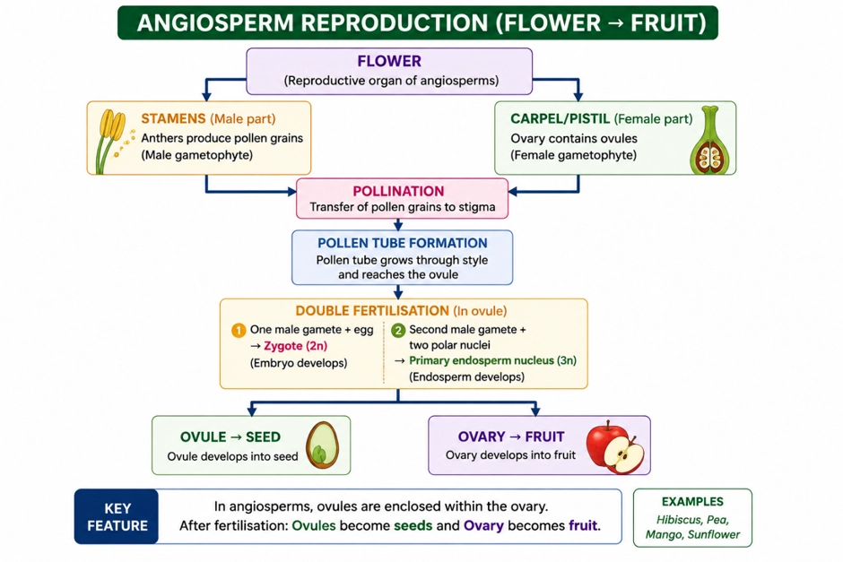

Class 11 · Biology
PLANT KINGDOM
Artificial → Natural → Phylogenetic; plus modern aids (numerical, cyto-, chemo-taxonomy)
PLANT CLASSIFICATION SYSTEMS
📖Definition & Introduction
- Plant classification = grouping and naming plants into taxa using selected characters and relationships.
- Systems evolved from artificial (few superficial traits) to natural (many traits; natural affinities) to phylogenetic (evolutionary relationships).
- Whittaker (1969) proposed the Five Kingdom system. Our concept of Plantae has narrowed: Fungi and cell-wall-bearing members of Monera and Protista that were earlier included are now excluded.
- Modern taxonomy uses extra evidence when fossil evidence is absent/insufficient: numerical taxonomy, cytotaxonomy, chemotaxonomy.
- Goal: reflect natural affinities and ideally common ancestry, not just appearance.
🖼️Diagram
🎯Key Concepts
- 🧩Artificial systems use few characters; may split close relatives or group unrelated plants.
- 🌼Linnaeus used mainly androecium (stamen number/arrangement): convenient but artificial.
- 🔬Natural systems consider many characters: morphology + anatomy + embryology + ultrastructure + phytochemistry.
- 🌳Phylogenetic systems classify by evolutionary relationships; members of a taxon are assumed to share a common ancestor.
- 💻Numerical taxonomy uses all observable characteristics; characters are coded and processed (computer-aided).
- 🧬Cytotaxonomy uses chromosome number, structure and behaviour to support/resolve classification.
🔎ARTIFICIAL CLASSIFICATION (EARLY SYSTEMS)
- Based on few superficial traits: habit, leaf number/shape, colour, etc.
- Linnaeus emphasised androecium: stamen number, length, fusion and arrangement.
- Early artificial systems often gave similar weight to vegetative and sexual traits; vegetative traits are more environment-sensitive.
- Often separates closely related species and groups unrelated species together.
⚙️NATURAL → PHYLOGENETIC: WHAT IMPROVED?
- Natural systems use many characters including internal features: anatomy, embryology, ultrastructure, phytochemistry.
- Bentham & Hooker gave a widely used natural classification for flowering plants.
- Phylogenetic systems classify by evolutionary relationships; members of a taxon are inferred to share a common ancestor.
- When fossils are absent/insufficient, modern aids provide independent lines of evidence.
⚖️ Artificial vs Natural vs Phylogenetic Classification
| Basis | Artificial | Natural | Phylogenetic |
|---|---|---|---|
| Main idea | Convenient grouping using few traits | Overall similarity from many traits (natural affinities) | Evolutionary relatedness (common ancestry) |
| Characters used | Mostly external; often vegetative or androecium characters | External + internal (anatomy, embryology, ultrastructure, phytochemistry) | Characters interpreted in the light of descent and ancestry; uses multiple lines of evidence |
| Strength | Easy identification and quick sorting | Reflects natural affinities better than artificial systems | Best aims to reflect evolutionary history |
| Limitation | May group unrelated plants; may separate related plants | May not show ancestry explicitly without an evolutionary framework | Needs strong evidence; fossils may be absent or insufficient |
| Key names / examples | Linnaeus (androecium-based system) | Bentham & Hooker (flowering plants; natural system) | Phylogenetic (evolutionary) classification systems |
💡 Memory Technique
“A-N-P + N-C-C”
Chlorophyll-bearing thalloid autotrophs: habitats, forms, and reproduction
ALGAE OVERVIEW
📖Definition & Introduction
- Algae are chlorophyll-bearing, simple, thalloid, autotrophic and largely aquatic organisms.
- Found in fresh water and marine habitats; also on moist stones, soil and wood.
- Some occur in association: with fungi as lichens; with animals as surface growth (e.g., on sloth bear).
- Body organisation is not differentiated into true root, stem, leaves; plant body is a thallus.
- Huge diversity in size: microscopic unicells/colonies to massive marine thalli (kelp-like forms).
🖼️Diagram
🎯Key Concepts
- 🌿Autotrophic: photosynthetic primary producers; algae carry out at least half of earth’s total CO2 fixation and raise dissolved O2 locally.
- 🌊Habitat diversity: aquatic (fresh/marine) plus moist terrestrial surfaces.
- 🧫Thalloid: no true roots/stems/leaves; simple plant body.
- 🧩Forms: colonial Volvox; filamentous Ulothrix, Spirogyra.
- 🧬Reproduction: vegetative (fragmentation), asexual (zoospores), sexual (isogamy/anisogamy/oogamy).
🔎HABITAT + FORMS (EXAMPLES)
- Aquatic is primary: fresh water ponds, streams; marine coasts and open seas.
- Also occur on moist stones, soil, wood; thin water film supports photosynthesis.
- Colonial: Volvox (spherical colony).
- Filamentous: Ulothrix (simple filament), Spirogyra (filament with spiral chloroplast).
- Some marine algae form massive thalli (kelp-like) and act as coastal primary producers.
⚙️REPRODUCTION: VEGETATIVE, ASEXUAL, SEXUAL
- Vegetative: fragmentation—each fragment grows into a new thallus.
- Asexual: spores; most common are zoospores (flagellated, motile) formed in zoosporangia.
- Sexual: fusion of two gametes; gametes may be motile or non-motile depending on species.
- Isogamy: gametes similar in size; e.g., Ulothrix (flagellated) and Spirogyra (non-flagellated).
- Anisogamy: gametes unequal in size; e.g., Eudorina.
- Oogamous: : one large, non-molile (static) female gamete and a smaller, motile male gamete. e.g. Volvox, Fucus.
⚖️Sexual reproduction types in algae (gamete features)
| Basis | Isogamy | Anisogamy | Oogamy |
|---|---|---|---|
| Gamete size | Similar | Dissimilar | Highly dissimilar |
| Motility (typical) | Both motile (Ulothrix) or both non-motile (Spirogyra) | Usually motile; unequal sizes | Egg non-motile; sperm motile |
| Key idea | No size differentiation | Beginning of size differentiation | Clear male–female differentiation |
| Examples | Ulothrix, Spirogyra | Eudorina | Volvox, Fucus |
💡Memory Technique
“Mnemonic: I–A–O = Same–Unequal–Egg”
Ecological services + food + industrial hydrocolloids from marine algae
ECONOMIC IMPORTANCE OF ALGAE
📖Definition & Introduction
- Economic importance of algae = benefits of algae to ecosystems and humans via photosynthesis and useful products.
- Fix a major share of Earth’s CO2 through photosynthesis; support global carbon cycle.
- Raise dissolved oxygen in water; directly supports aquatic respiration and water quality.
- Act as primary producers in aquatic ecosystems; form the base of food chains.
- Provide food (edible seaweeds) and industrial products like agar, algin and Carrageen.
🖼️Diagram
🎯Key Concepts
- 🌍≈ Half of Earth’s total CO2 fixation is carried out by algae.
- 💧Photosynthesis by algae increases local dissolved O2 in water bodies.
- 🐟Aquatic food webs depend on algae as primary producers of energy-rich compounds.
- 🍜Edible seaweeds: Porphyra, Laminaria, Sargassum (among many marine food algae).
- 🧫Agar from Gelidium and Gracilaria: microbiological culture media; also jellies/ice-creams.
- 🏭Algin (brown algae) and carrageen (red algae) are hydrocolloids used as thickeners/stabilizers.
🔎ECOLOGICAL IMPORTANCE (EXAM FAVOURITES)
- Algae account for a major fraction of global photosynthesis and CO2 fixation.
- Increase dissolved oxygen around them; supports fish and other aerobic organisms.
- Form the first trophic level in aquatic food chains; sustain zooplankton → fish → higher consumers.
- Bloom conditions can alter O2 dynamics; conceptually link to ecosystem balance (don’t confuse with cyanobacteria).
⚙️COMMERCIAL USES: WHO GIVES WHAT?
- Edible seaweeds: Porphyra (red), Laminaria & Sargassum (brown) are commonly cited food algae.
- Agar from Gelidium and Gracilaria: microbial culture medium; also jellies and ice-creams.
- Algin (brown algae): hydrocolloid for thickening/stabilizing in industry.
- Carrageen (red algae): hydrocolloid used as gelling/thickening agent.
- Chlorella: unicellular, protein-rich; used as a food supplement.
⚖️Key products: Brown vs Red algae (high-yield mapping)
| Basis | Brown algae (Phaeophyceae) | Red algae (Rhodophyceae) |
|---|---|---|
| Major hydrocolloid | Algin | Carrageen |
| Edible examples | Laminaria, Sargassum | Porphyra |
| Agar source | Not the main source | Gelidium, Gracilaria |
| Typical use focus | Thickener/stabilizer in industry | Gelling/thickening; agar for culture media |
💡Memory Technique
“Mnemonic: BRAC + PLS”
Pigments, chloroplasts, pyrenoids, cell wall, storage food and reproduction patterns
CHLOROPHYCEAE FEATURES (GREEN ALGAE)
📖Definition & Introduction
- Chlorophyceae are green algae with chlorophyll a and b as dominant pigments.
- Thallus organisation varies: unicellular, colonial or filamentous forms.
- Pigments are localised in definite chloroplasts of varied shapes.
- Food reserve mainly as starch; often associated with pyrenoids inside chloroplasts.
- Cell wall is typically rigid: inner cellulose + outer pectose layers.
- Reproduction occurs by vegetative, asexual (zoospores) and sexual (iso-/aniso-/oogamy) methods.
🖼️Diagram

🎯Key Concepts
- 🎨Grass-green colour due to dominance of chlorophyll a, b.
- 🧩Chloroplast shapes: cup (Chlamydomonas), spiral (Spirogyra), also discoid/plate/reticulate/ribbon.
- 📍Pyrenoids are chloroplast storage bodies; contain protein + starch.
- 🍚Stored food mainly starch; some members also store oil droplets.
- 🧱Cell wall: cellulose inner layer + pectose outer layer.
- 🧫Asexual reproduction: flagellated zoospores formed in zoosporangia.
🔎CHLOROPLASTS & PYRENOIDS (HIGH-YIELD DETAILS)
- Chloroplasts are definite (not diffuse) and vary with species.
- Shapes include discoid, plate-like, reticulate, cup-shaped, spiral, ribbon-shaped.
- Pyrenoids are common; located inside chloroplasts as storage bodies.
- Pyrenoids contain protein besides starch; hence starch deposition is often pyrenoid-linked.
⚙️REPRODUCTION PATTERNS (VEG + ASEXUAL + SEXUAL)
- Vegetative: fragmentation; each fragment develops into a new thallus.
- Asexual: motile zoospores produced in zoosporangia (flagellated).
- Sexual variation: isogamy (similar gametes), anisogamy (unequal gametes), oogamy (large non-motile egg + small motile sperm).
- Common Chlorophyceae: Chlamydomonas, Volvox, Ulothrix, Spirogyra, Chara.
💡 Memory Technique
“Mnemonic: GREEN checklist for Chlorophyceae”
G: Green pigments = chlorophyll a, b
R: Reserve = starch (often near pyrenoids)
E: Envelope wall = cellulose inside + pectose outside
E: Events = fragmentation, zoospores, and sexual
iso/aniso/oogamy
N: Names = Chlamydomonas, Spirogyra, Chara
Marine algae with fucoxanthin, differentiated thallus, laminarin–mannitol storage, biflagellate zoospores
PHAEOPHYCEAE (BROWN ALGAE): KEY FEATURES
📖Definition & Introduction
- Phaeophyceae are brown algae found primarily in marine habitats.
- Colour ranges olive green to dark brown due to fucoxanthin (xanthophyll) masking chlorophyll.
- Thallus varies from branched filaments to giant kelps (up to ~100 m).
- Thallus often differentiated into holdfast–stipe–frond for anchorage, support, photosynthesis.
- Cell wall is cellulosic with an outer algin gelatinous coating.
- Asexual reproduction mainly by biflagellate, pyriform zoospores with two unequal lateral flagella.
🖼️Diagram

🎯Key Concepts
- 🏝️Habitat: mostly marine; many are coastal/rock-attached forms.
- 🎨Pigments: chlorophyll a, c + carotenoids; fucoxanthin gives brown colour.
- 🧱Cell wall: cellulose + outer algin layer (slimy, water-holding).
- 🍬Storage products: laminarin (complex carbohydrate) and mannitol (sugar alcohol).
- 🧬Body plan: holdfast anchors; stipe stalk; frond leaf-like photosynthetic part.
- 🌀Asexual spores: zoospores are motile, pear-shaped, with 2 unequal lateral flagella.
🔎PIGMENTS & COLOUR
- Major photosynthetic pigments: chlorophyll a and chlorophyll c.
- Accessory pigments: carotenoids and xanthophylls; key xanthophyll is fucoxanthin.
- More fucoxanthin ⇒ deeper brown; less fucoxanthin ⇒ olive/greenish-brown appearance.
⚙️REPRODUCTION HIGHLIGHT (ASEXUAL)
- Vegetative reproduction: fragmentation of thallus.
- Asexual reproduction: biflagellate zoospores (motile) in most brown algae.
- Zoospores are pyriform (pear-shaped) with two unequal, laterally attached flagella.
- Sexual reproduction may be isogamous/anisogamous/oogamous; Fucus is a standard oogamy example.
⚖️Brown algae vs Green algae (quick contrast)
| Basis | Phaeophyceae (Brown) | Chlorophyceae (Green) |
|---|---|---|
| Dominant pigment | Fucoxanthin (xanthophyll) + chlorophyll a, c | Chlorophyll a, b |
| Stored food | Laminarin, mannitol | Starch (often with pyrenoids) |
| Cell wall special feature | Cellulose with outer algin gelatinous coating | Cellulose with outer pectose |
| Flagella (motile cells: zoospores/gametes) | 2, unequal, lateral | 2–8, equal, apical |
| Common habitat | Primarily marine | Often fresh water; also marine/brackish |
💡Memory Technique
“Mnemonic: FLaG-MAN for brown algae”
Marine red algae: r-phycoerythrin, deep-water survival, floridean starch, non-motile reproduction
RHODOPHYCEAE FEATURES (RED ALGAE)
📖Definition & Introduction
- Rhodophyceae are algae called red algae due to predominance of r-phycoerythrin.
- Majority are marine, with greater concentration in warmer areas.
- Occur in well-lighted regions close to the surface and also at great oceanic depths.
- Thallus is usually multicellular; some show complex body organisation.
- Reserve food is floridean starch, very similar to amylopectin and glycogen.
🎯Key Concepts
- 🎨r-Phycoerythrin predominates, giving red colour; accessory pigments aid light capture in water.
- 🌊Majority marine; higher abundance in warm seas; also occur at great depths.
- 🧬Asexual reproduction by non-motile spores; flagellated stages absent.
- ♀️Sexual reproduction: oogamous; gametes are non-motile; post-fertilisation changes occur.
- 🍚Stored food: floridean starch (amylopectin/glycogen-like).
- 📌Examples: Polysiphonia, Porphyra; also Gelidium, Gracilaria.
🔎HABITAT + PIGMENT LINK (WHY DEEP WATERS?)
- Red colour is due to predominance of r-phycoerythrin.
- Occur near surface in well-lighted regions and also at great depths.
- Greater concentration is common in warmer marine regions.
- Accessory pigments help capture available light in deeper water.
⚙️REPRODUCTION: NON-MOTILE STAGES + POST-FERTILISATION CHANGES
- Vegetative reproduction: fragmentation of thallus.
- Asexual reproduction: non-motile spores (flagella absent).
- Sexual reproduction: oogamous; gametes are non-motile.
- After fertilisation: complex post-fertilisation developments.
⚖️Red algae vs Brown algae vs Green algae (high-yield contrasts)
| Basis | Rhodophyceae (Red) | Phaeophyceae (Brown) | Chlorophyceae (Green) |
|---|---|---|---|
| Major pigments | Chlorophyll a,d + phycoerythrin (r-phycoerythrin predominant) | Chlorophyll a,c + fucoxanthin | Chlorophyll a,b |
| Stored food | Floridean starch | Laminarin / mannitol | Starch (often with pyrenoids) |
| Flagellated stages | Absent | Present in zoospores/gametes (biflagellate) | Present (zoospores commonly flagellated) |
| Habitat trend | Mostly marine; warmer areas; can be at great depths | Primarily marine | Commonly freshwater (also brackish/marine) |
| Examples | Porphyra, Polysiphonia | Fucus, Laminaria | Chlamydomonas, Spirogyra |
💡Memory Technique
“Mnemonic: RED = R-phycoerythrin, Exists at depths, Dormant (non-motile) stages”
Amphibians of plant kingdom: dominant haploid gametophyte with multicellular sex organs; dependent sporophyte; water needed for fertilisation
BRYOPHYTES OVERVIEW
📖Definition & Introduction
- Bryophytes are non-vascular land plants (liverworts, mosses, and hornworts) needing water for sexual reproduction.
- They occur mainly in moist, humid, shaded habitats; common on damp soil, banks and rocks.
- Plant body is thalloid or simple leafy; attached by rhizoids; they lack true roots, stem and leaves (may have root-like, stem-like and leaf-like structures).
- Main plant body is haploid gametophyte bearing multicellular sex organs.
- Sporophyte remains attached to gametophyte and derives nourishment from it (not free-living).
- Meiosis in sporophyte produces haploid spores that germinate into new gametophytes.
🖼️Diagram

🎯Key Concepts
- 💧Called amphibians because fertilisation needs water, though plants live on land.
- 🧩Body is thallus-like (prostrate/erect) with uni- or multicellular rhizoids for anchorage.
- 🧬Gametophyte (n) is dominant; bears multicellular antheridia and archegonia.
- 🧫Antheridium makes biflagellate antherozoids; archegonium is flask-shaped with one egg.
- 🌱Sporophyte (2n) develops from zygote; forms spores by meiosis inside capsule/sporangium.
- 🪨Ecology: pioneers on rocks, aid succession, form mats that reduce soil erosion.
🔎WHY "AMPHIBIANS" + HABITAT
- Bryophytes live on land but male gametes swim to the egg in a thin water film.
- Hence they prefer damp, humid, shaded places (banks, wet soil, moist rocks).
- Rhizoids mainly provide anchorage; absorption is largely across body surface.
⚙️ECOLOGICAL IMPORTANCE (EXAM FAVOURITES)
- Pioneer colonisers on bare rocks/soil; help primary succession by initiating soil formation.
- Dense moss mats reduce rain impact and prevent soil erosion.
- Sphagnum forms peat; high water-holding helps in packing/trans-shipment of living materials.
⚖️Gametophyte vs Sporophyte in Bryophytes
| Basis | Gametophyte | Sporophyte |
|---|---|---|
| Ploidy | Haploid (n) | Diploid (2n) |
| Dominance | Dominant, free-living, photosynthetic | Reduced; nutritionally dependent on gametophyte |
| Main role | Produces gametes | Produces spores (after meiosis) |
| Sex organs | Antheridium & archegonium present (multicellular) | Absent |
| Nutrition | Generally independent | Attached to gametophyte; may be partly photosynthetic but derives nourishment from gametophyte |
💡Memory Technique
“Mnemonic: "BRYO" (4 exam cues)”
Dorsiventral thallus • Gemma cups • Sporophyte = foot–seta–capsule
LIVERWORTS (MARCHANTIA): BODY PLAN & REPRODUCTION
📖Definition & Introduction
- Liverworts are bryophytes with a haploid gametophyte that is usually a dorsiventral thallus (e.g., Marchantia).
- Thallus is prostrate and closely appressed to the substratum; anchored by rhizoids (no true roots).
- Some liverworts are leafy: tiny leaf-like appendages arranged in two rows on stem-like axes.
- Asexual reproduction occurs by fragmentation of thalli and by gemmae formed in gemma cups.
- Sex organs occur on the gametophyte; male and female may be on same or different thalli; sporophyte remains attached to gametophyte.
🎯Key Concepts
- 🧭Dorsiventral thallus: distinct dorsal (upper) and ventral (lower) surfaces.
- 🍃Marchantia is thalloid; leafy liverworts show leaves in two rows.
- 🧩Vegetative propagation: fragmentation—each fragment can form a new thallus.
- 🟩Gemmae: green, multicellular asexual buds produced inside gemma cups.
- 🔁Life cycle: dominant gametophyte (n); sporophyte (2n) is dependent and short-lived.
- 🎒Sporophyte differentiation: foot (absorbs), seta (stalk), capsule (spore formation).
🔎BODY PLAN: THALLOID DORSIVENTRAL (MARCHANTIA) & LEAFY MEMBERS
- Thallus is dorsiventral: dorsal surface photosynthetic; ventral surface bears rhizoids and scales.
- Thallus is closely appressed to substrate; common in moist, shady habitats.
- Leafy liverworts: stem-like axis with leaf-like appendages in two rows (key ID feature).
- No true roots, stems, or leaves; these are analogous structures, not homologous to higher plants.
⚙️REPRODUCTION HIGHLIGHTS: GEMMAE & SPOROPHYTE DIFFERENTIATION
- Fragmentation: broken thallus pieces regenerate into new gametophytes.
- Gemma cups on thallus contain gemmae (green multicellular buds).
- Gemmae detach (often by rain splash) and germinate into new thalli (clonal offspring).
- Sex organs arise on gametophyte; male and female may be on same or different thalli.
- Sporophyte is dependent and differentiated into foot (absorption), seta (stalk), capsule (spore formation).
⚖️THALLOID vs LEAFY LIVERWORTS
| Basis | Thalloid liverwort (e.g., Marchantia) | Leafy liverwort |
|---|---|---|
| Main body form | Flattened, lobed thallus | Stem-like axis with leaf-like appendages |
| Dorsiventrality | Strongly dorsiventral thallus | Dorsiventral due to leaf arrangement |
| Leaf arrangement | Absent (no true leaves) | Leaves in two rows on axis |
| Common asexual method | Fragmentation; gemma cups prominent | Fragmentation; gemmae may occur in some |
💡Memory Technique
“Mnemonic: LiVeR = Liverwort Ventral rhizoids, Rain-splash gemmae”
Gametophyte-dominant bryophytes with protonema → leafy shoot; sporophyte for spore dispersal
MOSSES (BRYOPHYTA): LIFE CYCLE & REPRODUCTION
📖Definition & Introduction
- Mosses are bryophytes with a dominant haploid gametophyte and dependent diploid sporophyte.
- Gametophyte shows two stages: protonema (filamentous) and leafy stage (shoot with leaves).
- Attached to substratum by multicellular, branched rhizoids; no true roots, stem, leaves.
- Sex organs are multicellular: antheridia and archegonia at the apex of leafy shoots.
- After fertilisation (water required), zygote forms sporophyte: foot, seta, capsule producing spores by meiosis.
- Examples: Funaria, Polytrichum, Sphagnum (peat moss).
🖼️Diagram

🎯Key Concepts
- 🧫Protonema: first gametophyte stage from spore; green, branched, often filamentous and creeping.
- 🌱Leafy stage: arises as lateral bud from secondary protonema; upright axis with spiral leaves.
- 🧵Rhizoids: multicellular & branched; anchorage and absorption; not true roots.
- 🧩Vegetative reproduction: fragmentation and budding on secondary protonema.
- 💧Sexual reproduction needs water for antherozoids to reach archegonia (amphibians of plant kingdom).
- 🎯Sporophyte remains attached to gametophyte; capsule forms spores; dispersal is well-developed.
🔎GAMETOPHYTE: PROTONEMA → LEAFY STAGE
- Protonema is the juvenile gametophyte formed directly from spore germination.
- It is creeping, green, branched, and frequently filamentous; increases surface area for growth.
- Secondary protonema forms lateral buds that develop into the leafy stage.
- Leafy stage: upright slender axis with spirally arranged leaves (leaf-like appendages).
- Anchorage by multicellular, branched rhizoids; absorption mainly by surface/rhizoids.
⚙️REPRODUCTION: VEGETATIVE + SEXUAL + SPORE DISPERSAL

- Vegetative reproduction: fragmentation of protonema/leafy plant and budding on secondary protonema.
- Sex organs at apex of leafy shoots: antheridia (male) and archegonia (female).
- Water is essential for antherozoids to swim to archegonium; fertilisation forms zygote (2n).
- Zygote develops into attached sporophyte: foot (absorbing), seta (stalk), capsule (sporangium).
- In capsule, spore mother cells undergo meiosis → haploid spores; moss capsule shows elaborate spore dispersal.
⚖️PROTONEMA STAGE vs LEAFY STAGE (MOSS GAMETOPHYTE)
| Basis | Protonema stage | Leafy stage |
|---|---|---|
| Origin | From spore germination | From lateral bud on secondary protonema |
| Form | Creeping, green, branched, often filamentous | Upright slender axis with spirally arranged leaves |
| Main role | Establishment and spread; forms buds | Bears sex organs; major visible plant |
| Rhizoids | May be present/incipient in some; mainly thalloid spread | Attached to soil by multicellular, branched rhizoids |
| Sex organs | Absent | Antheridia and archegonia at apex of shoots |
💡Memory Technique
“Mnemonic: SPoLeR–FSC”
First vascular land plants: dominant sporophyte + prothallus gametophyte; homospory vs heterospory
PTERIDOPHYTES
📖Definition & Introduction
- Pteridophytes are the first terrestrial plants with vascular tissues (xylem, phloem).
- Main plant body is diploid sporophyte with true roots, stem, leaves.
- Sporophyte bears sporangia on sporophylls; sporangia form spores by meiosis.
- Spores germinate into small, free-living, mostly photosynthetic gametophyte called prothallus.
- Fertilisation needs water for antherozoids to reach archegonium; hence common in cool, damp habitats.
- Can be homosporous (one spore type) or heterosporous (microspores + megaspores; seed-habit precursor).
🖼️Diagram

🎯Key Concepts
- 🧬Alternation of generations: sporophyte dominant (2n) and prothallus (n) independent.
- 🩸First land plants with xylem + phloem → better conduction and support than bryophytes.
- 🍃Leaves: microphyll (small; e.g., Selaginella) vs macrophyll (large fronds; ferns).
- 🟤Sporangia borne on sporophylls; sporophylls may aggregate into strobili/cones (Selaginella, Equisetum).
- 💧Male gametes are motile antherozoids; water is essential for fertilisation.
- 🌱Heterospory (Selaginella, Salvinia): female gametophyte often retained on sporophyte → pre-seed habit.
🔎SPOROPHYTE BODY: VASCULAR + ORGANS
- First vascular land plants: xylem and phloem in true roots, stems, leaves.
- Habitat usually cool, damp, shady; some tolerate sandy soils (spread limited by water need).
- Microphylls: small leaves, single vein; typical of lycophytes (e.g., Selaginella).
- Macrophylls (fronds): large, many veins; typical of ferns (e.g., Dryopteris, Adiantum).
- Sporophyll = spore-bearing leaf; sporophylls may cluster into strobilus/cone (Selaginella, Equisetum).
⚙️REPRODUCTION: PROTHALLUS, HOMOSPORY & HETEROSPORY

- Sporangium contains spore mother cells; meiosis forms haploid spores.
- Spore → prothallus (small, thalloid, free-living, mostly photosynthetic gametophyte).
- Prothallus bears antheridia (antherozoids) and archegonia (egg).
- Water enables antherozoids to swim to archegonium; zygote develops into new sporophyte.
- Homosporous: one spore type; usually forms a bisexual gametophyte (most ferns, Lycopodium).
⚖️HOMOSPOROUS vs HETEROSPOROUS PTERIDOPHYTES
| Basis | Homosporous | Heterosporous |
|---|---|---|
| Spore types | One type of spore | Two types: microspore and megaspore |
| Gametophytes formed | Usually bisexual prothallus | Male (from microspore) and female (from megaspore) separate |
| Gametophyte position | Free-living, external | Female gametophyte often retained on sporophyte (variable period) |
| Evolutionary significance | No clear step toward seed habit | Embryo develops within female gametophyte → precursor to seed habit |
| Examples (NEET/JEE) | Many ferns, Lycopodium | Selaginella, Salvinia |
💡Memory Technique
“Mnemonic: PTerido = Pipes + True organs”
Naked seeds: exposed ovules on cones, reduced gametophytes, wind pollination → seed
GYMNOSPERMS
📖Definition & Introduction
- Gymnosperms are seed plants with ovules not enclosed by an ovary wall; seeds remain naked.
- Dominant plant body is sporophyte; woody trees/shrubs (e.g., Pinus, Cycas).
- Reproduction is heterosporous: microspores (male) and megaspores (female).
- Male and female gametophytes are highly reduced and dependent on sporophyte (no free-living stage).
- Pollination mainly by wind; pollen reaches ovule directly (no stigma/style).
- After fertilisation: zygote → embryo; ovule → seed (exposed on cone scales).
🖼️Diagram

🎯Key Concepts
- 🫘Naked seeds: ovules exposed on megasporophylls; no ovary, hence no fruit.
- 🌰Ovule parts: nucellus (megasporangium) + integument(s) with micropyle.
- 🌿Adaptations: needle-like leaves, thick cuticle, sunken stomata reduce water loss.
- 🧬Heterospory: microspores → pollen grains; megaspore → female gametophyte with archegonia.
- 🌬️Wind pollination: pollen carried by air to ovule opening; pollen tube delivers male gametes.
- 🪵Roots: usually tap root; Pinus has mycorrhiza; Cycas has coralloid roots with N-fixing cyanobacteria.
🔎ADAPTATIONS IN PLANT BODY (EXAM FAVOURITES)
- Habit: medium/tall trees or shrubs; sporophyte dominant and woody.
- Roots usually tap roots; Pinus shows mycorrhiza (fungal association).
- Cycas forms coralloid roots with N-fixing cyanobacteria.
- Stems: unbranched in Cycas; branched in conifers like Pinus, Cedrus.
- Leaves: conifer needle-like leaves reduce surface area; thick cuticle + sunken stomata reduce transpiration.
⚙️HETEROSPORY → CONES → SEED FORMATION (STEPWISE)
- Male (microsporangiate) strobilus: microsporophylls bear microsporangia.
- Microspore mother cells undergo meiosis → haploid microspores → pollen grain (reduced male gametophyte).
- Female (megasporangiate) strobilus: megasporophylls bear ovules (nucellus + integument + micropyle).
- In nucellus, megaspore mother cell undergoes meiosis → 4 megaspores; usually one functional.
- Functional megaspore → female gametophyte retained in ovule; bears 2 or more archegonia (egg).
⚖️MALE vs FEMALE CONE (STROBILUS) IN GYMNOSPERMS
| Basis | Male cone (microsporangiate) | Female cone (megasporangiate) |
|---|---|---|
| Main unit | Microsporophyll | Megasporophyll |
| Bears | Microsporangia | Ovules (= megasporangia/nucellus + integument) |
| Meiosis product | Microspores | Megaspores |
| Gametophyte formed | Pollen grain (reduced male GT) | Female GT retained in ovule; archegonia present |
| Key outcome | Dispersed pollen for wind pollination | Site of fertilisation; ovule develops into naked seed |
💡Memory Technique
“Mnemonic: GYMNO = 'Goes YOLO, Makes NO-ovary'”
Ovules enclosed in ovary → seeds enclosed in fruits; largest and most useful plant group
ANGIOSPERMS (FLOWERING PLANTS)
📖Definition & Introduction
- Angiosperms are seed plants in which ovules are enclosed in an ovary (carpel).
- Pollen grains and ovules develop in specialised reproductive structures called flowers.
- After fertilisation, ovary develops into fruit and ovules develop into seeds.
- They occur in a wide range of habitats and show maximum diversity among plants.
- They are divided into two major classes: dicotyledons and monocotyledons.
🖼️Diagram

🎯Key Concepts
- 🔒Key diagnostic feature: enclosed ovules (unlike gymnosperms with naked ovules).
- 🍎Fruit formation: seed protection + dispersal; seeds are Enclosed within fruit" in angiosperms.
- 🌍Habitat range: aquatic to terrestrial; size from Wolffia (tiny) to very tall trees like Eucalyptus.
- 🌾Economic importance: food, fodder, fuel, medicines and many commercial products.
- 🌱Classification basis here: number of cotyledons in seed embryo → dicots vs monocots.
🔎WHY ANGIOSPERMS DOMINATE
- Flowers enable efficient pollination (often via insects, birds, wind) and promote outcrossing.
- Fruits protect developing seeds and aid dispersal by animals, wind or water.
- High adaptability: herbs, shrubs, trees; aquatic to desert; annuals to perennials.
⚙️EXAMPLES + ECONOMIC IMPORTANCE
- Smallest angiosperm: Wolffia (minute free-floating aquatic).
- Very tall angiosperms include trees like Eucalyptus.
- Major resources: cereals/pulses/fruits; fodder grasses; fuel wood; medicinal plants; fibres and oils.
⚖️DICOTYLEDONS vs MONOCOTYLEDONS (Quick Comparison)
| Basis | Dicotyledons | Monocotyledons |
|---|---|---|
| Cotyledons in seed | Two | One |
| Leaf venation (typical) | Reticulate (net-like) | Parallel |
| Root system (typical) | Tap root | Fibrous/adventitious |
| Floral parts (typical) | In 4s or 5s | In 3s |
| Examples | Pea, mustard, mango | Wheat, rice, maize |
💡Memory Technique
“Mnemonic: ANGIO = "aNGly INside Ovary"”